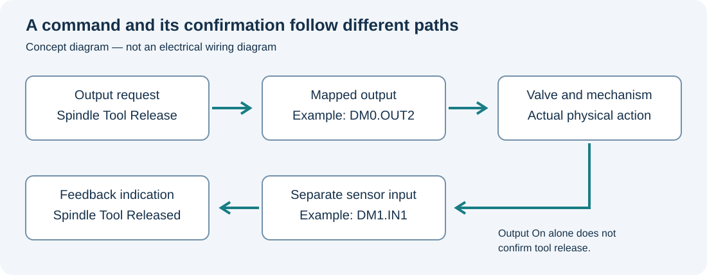

RADONIX · ROUTERXYZAC+TC · CHAPTER 30
Operator Manual · English · 9 October 2026
Input and Output Monitor
Locate a channel, understand its indication and collect useful evidence about switches, sensors, outputs and drive requests.
Expanded draft for review. The dedicated Input / output monitor is read-only. Displayed requests and physical outcomes must be checked separately.
30.1 Open the dedicated monitor and navigate the module panels
An input brings information from a switch or sensor into the control system. An output carries a request toward equipment such as a valve or drive. The Input / output monitor lets you observe these channel indications while keeping their addresses visible. Use it when you need to report which channel changed, whether a command indication appeared, or whether a module is represented in the current view.
The application command is OpenIoDiagnostics. Its supplied shortcut is Ctrl+Shift+Alt+Delete. Check the current saved assignment and keyboard-enabled state before using it from the active main window. The shortcut is configurable, and operating-system handling can affect whether a combination reaches the application. Chapter 24 explains the assignment workflow.
Shared panel width and saved layout
The monitor uses the same readable signal captions as Configuration. Internal PLC identifiers and physical addresses remain unchanged. Hover over a shortened label to see the full name and address. In PLC Memory, numeric indices are raw memory addresses, not signal names.
Place the pointer in the narrow invisible gap immediately to the right of the first module panel. The horizontal resize cursor identifies the grip. Drag to resize all panels together from 75% to 200% of their default width. It works with any first module and with a single panel. Heights stay fixed; wider content uses horizontal scrolling.
With Save Window Layout enabled (default), closing the monitor saves its placement and shared panel-width percentage for the next opening or session. With the option disabled, saved layout is neither restored nor overwritten. The percentage is independent of display DPI. Diagnostic windows do not offer a minimize button.
Identify the correct window
The dedicated window is titled Input / output monitor. It contains side-by-side module panels and a footer describing the connection state, raw physical channels and read-only operation. It is different from the combined PLC monitor's IO tab and from the Mapping settings in Chapter 23.
| Action | Effect |
|---|---|
| Open the monitor again while it is already open | Brings the existing window forward. Diagnostic windows do not offer a minimize button. |
| Widen the window | Shows more module panels across the screen. |
| Use horizontal scrolling | Reaches panels outside the current visible width. |
| Hover over a channel caption | Shows the full channel address and associated mapping name, when present. |
| Close | Ends this window's observation; it does not stop the machine or clear outputs. |
The window keeps a fixed height and does not offer a maximize action. Widening or horizontal scrolling is therefore the normal way to reach additional panels. A missing panel at the right edge may simply be outside the viewport; check the horizontal scroll before reporting missing hardware.
Read-only applies to every channel here
The indicator lamps are not output switches. Clicking a digital input, output or inverter row in this dedicated monitor does not toggle it. There is no force, reset, apply or write-value action. Use the normal operating controls for authorized machine actions and the mapping editor for authorized configuration changes.
This distinction also applies in simulation: this dedicated window remains read-only. A separate combined PLC monitor has different simulation interaction, so instructions for that tool must not be transferred to this window. Always name the window when asking for help.
Opening the monitor does not establish a controller connection or certify that equipment is healthy. First read the footer and the module heading, then interpret an individual channel. Keep the normal operating screen and machine supervision available while collecting observations.
30.2 Match the module, channel and signal name
Read a channel caption together with its panel heading. A row labelled IN4 inside DM1 identifies DM1.IN4. IN4 in DM0 is a different channel. A screenshot that omits the module heading can therefore be misleading even when the row text is legible.
Digital modules use DM, analog modules use AM and encoder modules use EM in their panel identities. Inverter panels use INV. These are software identities associated with the configured equipment. They do not replace the electrical drawing's terminal labels or prove that the intended wire is connected.
| Panel family | Rows | Interpretation |
|---|---|---|
| DM | IN0–IN7, then OUT0–OUT7 | Eight digital input and eight digital output channels. |
| AM | IN0–IN1, then OUT0–OUT1 | Two analog input and two analog output channels where that module is configured and present. |
| EM | ENC indices | Encoder input counts; the displayed encoder index identifies the channel. |
| INV | RUN, SPEED and STATE | Drive request and readiness information, discussed later in this chapter. |
A mapping name explains the intended purpose
The application supplies names for enabled mappings that select physical targets. A digital row can therefore appear as IN4: ToolHeightSensor in the DM1 panel. The compact name may differ from the spaced display label in Configuration, but it identifies the same named mapping. Hover over the row to read the full address and name if the caption is shortened.
A row without a signal name can still be a real channel. It means this naming information does not associate a current enabled physical mapping with that target. Unassigned, disabled, fixed-input and virtual-output mappings are not listed as physical channel names by this mechanism. Consult Chapter 23 before interpreting an absent name as an absent signal.
Pay attention to pending mapping labels
The suffix [pending mapping] identifies mapping information that differs from the deployed configuration. The raw channel indication is still a reading of that channel; the name beside it describes pending metadata. Do not use the label alone as proof that the currently running control logic has already adopted the new connection.
Names are prepared when monitoring starts and when the application refreshes mapping metadata. They are not a continuous audit of electrical wiring. After an approved mapping change, compare the monitor label with the accepted and deployed configuration before carrying out verification.
Fresh router settings define DM0, DM1 and AM0, with no inverter. Engineering selects module and inverter counts in Configuration; saved selections can differ from these defaults. Other families described by the shared monitor appear only when the installation's configuration and presence conditions provide them. An analog or encoder panel is not guaranteed to appear merely because this manual describes its format.
SCREENSHOT TO INSERT · FIGURE 30-1
Module panels, channel names and footer
Capture the dedicated monitor with at least one digital panel and the inverter panel visible, where available. Annotate a complete module/channel address, a mapped signal name, the horizontal scroll and connection/read-only footer. Keep the machine in its normal authorized observation state.
Suggested asset: assets/images/30-io-monitor-overview.png
30.3 Read digital indications without confusing a command with feedback
A digital channel has two reported states. For an available input, an illuminated indicator means that its reported bit is on; an unilluminated indicator means that it is off. The digital rows use a lamp beside the channel caption. They do not provide a separate numerical value column. Before interpreting an unlit lamp, check that the channel is available: a disabled indication during loss of connection is not a confirmed off reading.
Start with the meaning of the sensor
A sensor converts a physical condition into an electrical signal. Depending on the machine, the condition might be a tool touching a measuring surface, a clamp reaching its released position, or a switch circuit being closed. The monitor shows the channel state received by the controller. It does not explain the sensor's mounting, wiring or required operating condition.
In particular, on does not always mean an alarm, and off does not always mean normal. A normally closed circuit is closed in its normal condition. Opening that circuit changes the input, but the monitor cannot distinguish every possible reason for the change. A pressed switch and a broken wire can require different investigation even when the displayed state is the same. Use the machine's approved signal description to establish the expected state.
For example, the supplied profile places EmergencySwitch at DM0.IN7 and expects a normally closed circuit. Do not interpret its lit indication as an emergency request merely because the name contains “Emergency.” Equally, restoring the expected input is not permission to resume machining. Follow the stop-and-recovery procedure and check the machine's condition before any restart.
Separate the request from the result
An output indication reports the controller's output state. It does not measure the voltage at a terminal, the air pressure at a cylinder, or the final position of a mechanism. For an operation with a separate confirmation sensor, observe both the output and that input. The supplied profile, for example, uses SpindleToolRelease at DM0.OUT2 for the release command and SpindleToolReleased at DM1.IN1 for release confirmation. These are two different pieces of information.
| Observation | Reasonable interpretation | What remains unconfirmed |
|---|---|---|
| An available input lamp changes. | The reported state of that channel changed between observations. | The exact cause and precise time of the physical event. |
| The release output is on. | The controller reports an active release output. | Valve operation, pressure and actual release of the tool. |
| The release-confirmation input is on. | The assigned confirmation channel reports on. | Correct wiring and sensor adjustment; these require machine-specific verification. |
| The expected confirmation does not appear. | The observed request and feedback do not yet match the expected sequence. | Whether the cause is timing, mechanics, wiring, mapping or control logic. |
| An unavailable row is unlit. | No usable on/off observation is being shown. | The actual electrical or mechanical state. |
Record an unexpected combination and stop the affected operation according to the machine procedure. Do not click repeatedly, alter a mapping or bypass a sensor to obtain the expected picture. The dedicated monitor has no output-forcing control, and a changed picture would not by itself repair the underlying problem.
30.4 Interpret analog, encoder and inverter readings
Some channels carry a quantity rather than a simple on/off signal. Their rows include a number or a state name at the right. Read that value first. The adjacent lamp generally indicates that the underlying value is nonzero; it is not a universal “healthy” light. A negative encoder count is nonzero, and an inverter fault has a nonzero state value, so both can have illuminated indicators.
Analog values: identify the scale before interpreting the number
An analog input represents a varying signal, while an analog output represents a varying commanded level. The monitor displays these channels as unsigned whole-number raw readings, without adding volts, pressure, percentage or spindle revolutions per minute. The display reads a 16-bit quantity, capable of holding 0 through 65535. That storage range is not a statement that 65535 is the installed module's full-scale operating value.
Use the commissioned module specification and signal scaling to interpret a reading. For example, if the documented channel scale is 0–10000, a reading of 5000 represents half that scale. It does not automatically mean 5000 RPM or 5 volts. Do not use the example to change calibration. Record the raw value and channel address if the actual scale is not known.
Encoder values: counts need a machine-specific interpretation
An encoder produces counts as its measured mechanism moves. The monitor shows a signed whole-number count, which can be positive, zero or negative. It does not automatically convert the number into millimetres or degrees, and this row is not the same as the main screen's work-position display. A value of zero alone does not establish that the machine is homed. Direction, counts per revolution and the relationship to machine travel must come from the installed equipment's setup.
Inverter readings: read RUN, SPEED and STATE together
An inverter controls a variable-speed device such as the spindle. Its RUN lamp represents the consumed operating request. SPEED shows the consumed speed request as a fraction of the configured range, displayed to four decimal places: 0.0000 is zero, 0.5000 is half and 1.0000 is full range. Neither reading is a measurement of spindle rotation. A request can take a short time to appear, and a nonzero speed only takes effect while the run request is active.
STATE describes observed readiness. For example, a lit RUN with Starting means that operation has been requested and readiness is still being established. Enabled confirms operation enabled; it does not prove arrival at the requested speed. An unlit RUN or a zero speed request does not prove the shaft has stopped.
| State | Meaning | Operator interpretation |
|---|---|---|
NotConfigured | The device is disabled in configuration. | Normally no panel is included for this device. |
Offline | The controller is not online. | This window normally shows unavailable readings or removes absent panels instead of presenting live state text. |
Unavailable | The device or its feedback is unavailable. | Readiness cannot be confirmed. A missing device may have no visible panel. |
Disabled | Disable and zero-speed commands have completed, with disabled feedback. | The shaft may still be coasting. |
Starting | The requested operation is becoming ready. | Do not treat it as confirmed running at speed. |
Enabled | The device confirms operation enabled. | Zero speed is possible; actual speed is not established here. |
Stopping | Disabling was requested and completion is still being observed. | Do not treat the request as completed standstill. |
Faulted | A device or control-service fault was reported. | Record the state and related messages; follow the fault procedure. |
The table explains the state vocabulary, not a sequence of states that every operator will see. Brief transitions may occur between display updates, and unavailable devices can disappear from the panel list. Most importantly, no state in this table certifies physical shaft standstill. Use the machine's prescribed confirmation before tool access or any work near rotating parts.
30.5 Recognize connection, simulation and refresh limitations
Before comparing readings, establish whether the monitor can currently provide usable data. There are two separate questions: is the module included in the window? and are its displayed values available? A panel's presence alone does not answer the second question, nor does it prove that the corresponding physical hardware is connected.
Why a panel can appear or disappear
A configured ordinary module is included when it is online. A configured virtual module can be included without physical hardware, and hard simulation allows configured modules to appear for simulated operation. An inverter panel requires an enabled configuration and either reported device presence or hard simulation. The window rechecks presence while monitoring and rebuilds its panels when it changes.
Consequently, losing a hardware connection can remove a panel rather than leave a permanent set of empty rows. The message No modules present means that no panels currently qualify for display. It does not identify the cause. The cause might involve configuration, device presence or connection state; it is not an instruction to add a module or change its address. First record the message and compare the controller status with the expected machine configuration.
Unavailable readings are different from zero readings
Readings are available when the controller is online and a PLC configuration apply is not active. Otherwise, the signal indicators are disabled and numerical or state-text rows show a dash. The footer can still say Online during a configuration apply even though channel readings are temporarily unavailable. Allow an already authorized apply operation to finish; do not start another configuration change to make the lamps return.
| What you see | What it can mean | What to do with the observation |
|---|---|---|
| An available numerical row reads zero. | A usable zero value is being displayed. | Interpret zero using that channel's meaning and scale. |
| A numerical or state row shows a dash. | The view is not presenting an available value. | Record the connection and configuration-apply context; do not report the dash as zero. |
| A panel disappears. | The module no longer meets the display-presence conditions. | Report the missing module name and connection status. |
| Panels and changing values appear in simulation. | Simulated data can populate the same display. | Label the observation as simulation; it does not verify field wiring. |
| A short signal change was not seen. | It may have occurred between screen updates. | Do not conclude that the event never occurred. |
Check operating mode outside the footer
The footer includes connection status followed by Raw physical channels and Read-only. Here, “physical channels” describes the address-based view. It does not certify a physical machine session: the same wording is used when simulation supplies the values. Check the application's operating-mode and connection indication, and include the mode in any report. Do not switch modes merely to investigate a screenshot.
This is a live view, not an event recorder
The intended refresh interval is approximately 100 milliseconds while the window is visible and not minimized. Actual screen updates depend on the application and Windows being able to process them. A short pulse can begin and end between updates. Separate rows can also reflect slightly different instants, so the screen is not a precise timing measurement of the order of events.
Minimizing, hiding or closing the window stops its monitoring. Restoring it resumes observation; it does not replay the events that occurred while it was inactive. This form has no history, trend recording or pulse counter for reconstructing a missed transition. If timing or intermittent behavior matters, report the limitation and ask support for the appropriate recording method. Closing the monitor stops observation only; it does not stop the machine.
30.6 Observe a signal and prepare a useful support report
A useful observation answers a small, specific question: which channel was being watched, what condition was expected, and what actually appeared? “The inputs do not work” gives support little to investigate. “During the approved check, DM1.IN4 remained unlit while the controller was online in Normal mode” identifies a channel and a condition without pretending to establish the cause.
Prepare the observation
- Identify the purpose. Use the machine's signal list or a support instruction to identify the required sensor or output. Confirm the full channel address and any associated name. Record a pending-mapping suffix if present.
- Establish context. Note Normal or Simulation mode, the connection indication, the machine's current activity and whether any settings apply is underway. Keep the module heading and footer visible.
- Record the starting condition. Describe the relevant lamp as on, off or unavailable. Copy a numerical value or state name exactly. Include units only when the installed scale is known.
- Observe only an authorized operation. Follow the normal operating procedure or a specific approved test. Opening this read-only window does not authorize moving an axis, releasing a tool or entering the machine to actuate a sensor.
- Record the result and its limits. Note what changed and what did not. State whether you saw a sustained condition or only a brief indication. If a transition was too fast to see, say so.
- Leave the machine in the required condition. End the approved test through its normal controls. Close the monitor when observation is finished; do not use Close as a stop command.
Report command and confirmation separately
When an operation has an output request and a separate confirmation input, include both. The following diagram uses the supplied tool-release mappings to explain that relationship. It is a conceptual aid, not a wiring drawing or an instruction to release a tool.

If the output appears but confirmation does not, report that combination. It helps separate the request from the observed result without assuming which component failed. Do not keep repeating a failed action to collect a better screenshot. If the mechanism behaves unexpectedly, follow the machine's stop procedure before continuing investigation.
| Item | What to record |
|---|---|
| Window and context | Input / output monitor; date and approximate time; Normal or Simulation mode; controller connection state. |
| Channel identity | Full module and channel address, signal name and any pending-mapping label. |
| Expected condition | The expected input, output or drive state according to the approved procedure. |
| Actual indication | On, off or unavailable; exact raw number or inverter state text; missing panel if applicable. |
| Related observation | The paired output or confirmation input, relevant application message, and visible machine behavior from the normal operating position. |
| Evidence limits | Whether the event was brief, the window was minimized, the connection changed or the screenshot was captured after the event. |
Capture a readable screenshot
The dedicated monitor has no built-in screenshot or report-export command. Use the site's approved screen-capture method. Include the title, relevant panel heading, channel caption and footer. If several panels cannot fit, take separate images with enough shared context to identify them. A still image records one displayed condition; it cannot establish a transition sequence or exact response time.
For configuration questions, continue with Chapter 23. For control-program activity, use Chapter 28; for a requested internal value, use Chapter 29. Choose the view that answers the question, and preserve the distinction between physical-channel readings, named mappings and internal control values.